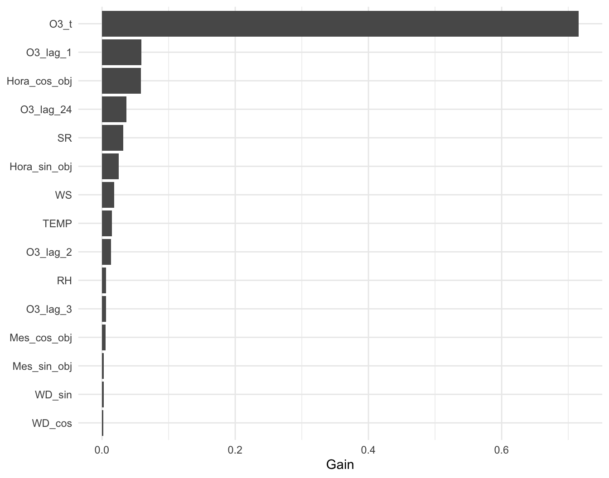
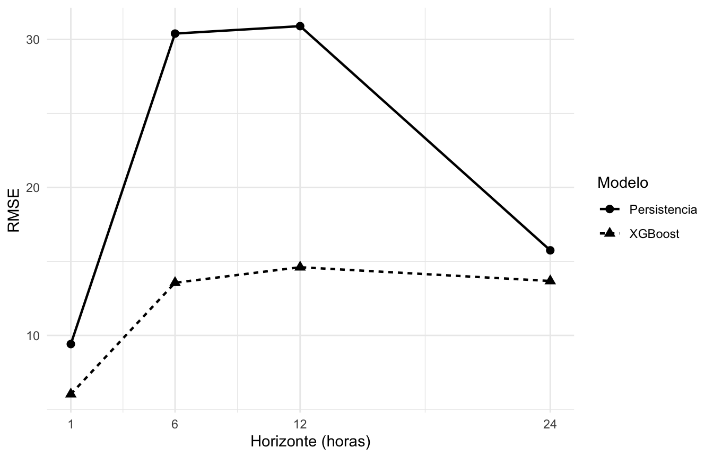
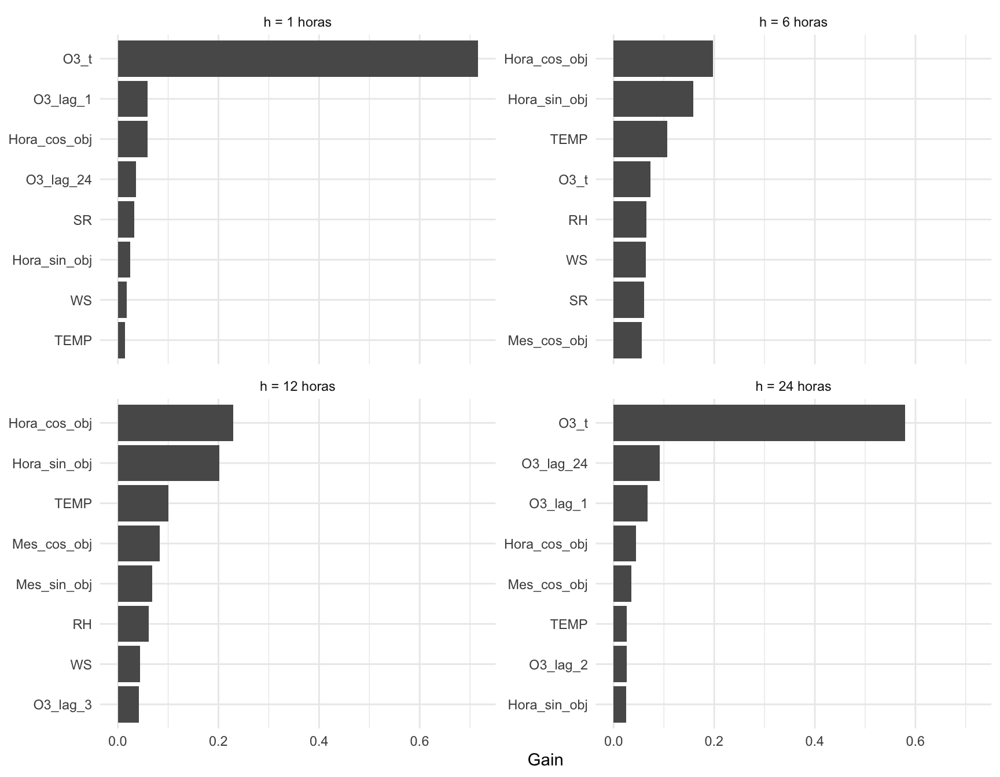

library(tidyverse)
library(here)
library(lubridate)
library(xgboost)
options(scipen = 999)
set.seed(123)Modelado XGBoost para O3
Objetivo de este archivo
Este archivo se utilizará únicamente para construir, ajustar y evaluar el modelo XGBoost. La limpieza, homologación y justificación de las decisiones metodológicas permanecen documentadas en reporte.qmd.
Para evitar repetir el procesamiento ya documentado en el reporte principal, este archivo parte directamente de data/base_modelado_o3.rds. Esa base se genera al final de reporte.qmd y ya contiene la cuadrícula horaria, las variables limpias y los rezagos seleccionados. Aquí no se vuelven a homologar fechas, limpiar mediciones ni reconstruir la historia temporal.
La definición del problema se mantiene igual que en el reporte principal:
- estaciones:
NTE,NTE2,NOyNE; - periodo útil: 2021-2025;
- entrenamiento: 2021-2023;
- validación: 2024;
- prueba final: 2025;
- horas objetivo: 10:00-20:00;
- horizonte máximo: 24 horas.
El desarrollo se hará de forma incremental. Primero se construirá un modelo para una hora de anticipación (h = 1). Una vez comprobada la estructura, la misma lógica se extenderá a los demás horizontes.
Carga de la base de modelado
Este archivo comienza donde termina la preparación del reporte principal. Primero se cargan las librerías necesarias y se fija la semilla para que los resultados del entrenamiento sean reproducibles. xgboost debe estar registrado en renv.lock para que cualquier integrante pueda restaurar el entorno con renv::restore().
La base se lee directamente desde el RDS generado por reporte.qmd. Si el archivo no existe, primero debe renderizarse el reporte principal. No se realiza ninguna conversión adicional de fechas ni se vuelven a crear los rezagos.
ruta_base_modelado <- here("data", "base_modelado_o3.rds")
if (!file.exists(ruta_base_modelado)) {
stop(
"No se encontró data/base_modelado_o3.rds. ",
"Renderiza primero quarto/reporte.qmd para generar la base de modelado."
)
}
base_origen_modelado <- readRDS(ruta_base_modelado)Antes de entrenar se comprueba que la base conserve la estructura esperada. Esta verificación permite detectar inmediatamente si el archivo de modelado quedó desactualizado o incompleto.
columnas_requeridas <- c(
"Estacion", "fecha_hora",
"O3_t", "O3_lag_1", "O3_lag_2", "O3_lag_3", "O3_lag_24",
"SR", "TEMP", "RH", "WS", "WD_sin", "WD_cos", "NOX"
)
faltantes_estructura <- setdiff(
columnas_requeridas,
names(base_origen_modelado)
)
if (length(faltantes_estructura) > 0) {
stop(
"La base de modelado no contiene: ",
paste(faltantes_estructura, collapse = ", ")
)
}
resumen_base_xgboost <- tibble(
Registros = nrow(base_origen_modelado),
Desde = min(base_origen_modelado$fecha_hora),
Hasta = max(base_origen_modelado$fecha_hora),
Estaciones = n_distinct(base_origen_modelado$Estacion),
O3_t_disponible_pct = round(
mean(!is.na(base_origen_modelado$O3_t)) * 100,
1
)
)
knitr::kable(
resumen_base_xgboost,
caption = "Verificación de la base recibida desde reporte.qmd"
)| Registros | Desde | Hasta | Estaciones | O3_t_disponible_pct |
|---|---|---|---|---|
| 157632 | 2021-01-01 | 2025-06-30 23:00:00 | 4 | 92.1 |
Construcción del horizonte
La única transformación temporal que corresponde a este archivo es definir qué hora futura se desea predecir. La base de origen ya contiene toda la información disponible en el momento t; la función siguiente agrega O3(t+h), las variables cíclicas de la hora y el mes objetivo y la separación cronológica de entrenamiento, validación y prueba.
construir_base_horizonte <- function(h) {
base_origen_modelado |>
group_by(Estacion) |>
mutate(
O3_objetivo = lead(O3_t, h)
) |>
ungroup() |>
mutate(
Horizonte_h = h,
fecha_objetivo = fecha_hora + hours(h),
Año_objetivo = year(fecha_objetivo),
Hora_objetivo = hour(fecha_objetivo),
Mes_objetivo = month(fecha_objetivo),
Hora_sin_obj = sin(2 * pi * Hora_objetivo / 24),
Hora_cos_obj = cos(2 * pi * Hora_objetivo / 24),
Mes_sin_obj = sin(2 * pi * (Mes_objetivo - 1) / 12),
Mes_cos_obj = cos(2 * pi * (Mes_objetivo - 1) / 12),
Periodo = case_when(
Año_objetivo %in% 2021:2023 ~ "Entrenamiento",
Año_objetivo == 2024 ~ "Validacion",
Año_objetivo == 2025 ~ "Prueba",
TRUE ~ NA_character_
)
) |>
filter(
!is.na(Periodo),
between(Hora_objetivo, 10, 20)
)
}Primer horizonte: una hora
Por ahora se mantiene h = 1 para comprobar el flujo completo antes de extender el entrenamiento a los 24 horizontes. Solo se eliminan filas sin O3_objetivo; los valores faltantes de los predictores permanecen disponibles para que XGBoost los maneje de forma nativa.
base_h1 <- construir_base_horizonte(1) |>
filter(!is.na(O3_objetivo))
resumen_h1 <- base_h1 |>
count(Periodo, name = "Observaciones_con_objetivo") |>
arrange(factor(
Periodo,
levels = c("Entrenamiento", "Validacion", "Prueba")
))
knitr::kable(
resumen_h1,
caption = "Observaciones disponibles para predecir O3 con una hora de anticipación"
)| Periodo | Observaciones_con_objetivo |
|---|---|
| Entrenamiento | 45110 |
| Validacion | 15547 |
| Prueba | 7467 |
La cantidad de objetivos debe coincidir con la obtenida en reporte.qmd para el mismo horizonte. Esta comprobación asegura que el modelo utiliza exactamente la misma base que sustentó las decisiones metodológicas anteriores.
Modelo de persistencia
Antes de XGBoost se calcula una referencia mínima. Para una hora de anticipación, el modelo de persistencia supone que la concentración dentro de una hora será igual a la concentración actual:
\[\widehat{O_3}(t+1) = O_3(t) \]\[\widehat{O_3}(t+1) = O_3(t)\]
Primero se define una función pequeña para calcular las dos métricas que utilizaremos en todos los modelos: MAE y RMSE.
calcular_metricas <- function(observado, predicho) {
tibble(
MAE = mean(abs(observado - predicho)),
RMSE = sqrt(mean((observado - predicho)^2))
)
}Después se calcula la predicción de persistencia sobre 2024. Solo puede utilizar las observaciones donde O3_t está disponible, porque su predicción es precisamente el último valor observado de O3.
validacion_h1 <- base_h1 |>
filter(Periodo == "Validacion")
validacion_comun_h1 <- validacion_h1 |>
filter(!is.na(O3_t))
metricas_persistencia_h1 <- calcular_metricas(
validacion_comun_h1$O3_objetivo,
validacion_comun_h1$O3_t
) |>
mutate(
Modelo = "Persistencia",
Observaciones = nrow(validacion_comun_h1),
.before = 1
)XGBoost
Primer modelo sin ajuste exhaustivo
El primer XGBoost utiliza el conjunto principal de predictores definido en el reporte. NOX se deja fuera por ahora para poder medir posteriormente si agregarlo produce una mejora real.
Los predictores son:
- O3 actual y rezagos de 1, 2, 3 y 24 horas;
- radiación solar, temperatura, humedad relativa y velocidad del viento;
- componentes seno y coseno de la dirección del viento;
- hora y mes del instante que se desea predecir;
- estación de monitoreo.
No se imputan los NA de TEMP, RH u otras variables: XGBoost aprende durante la construcción de los árboles qué ruta utilizar cuando un predictor está ausente.
XGBoost necesita una matriz numérica. El siguiente bloque selecciona los predictores y convierte Estacion en cuatro columnas indicadoras, una por estación.
predictores_numericos <- c(
"O3_t", "O3_lag_1", "O3_lag_2", "O3_lag_3", "O3_lag_24",
"SR", "TEMP", "RH", "WS", "WD_sin", "WD_cos",
"Hora_sin_obj", "Hora_cos_obj", "Mes_sin_obj", "Mes_cos_obj"
)
crear_matriz_xgb <- function(datos) {
matriz_numerica <- datos |>
select(all_of(predictores_numericos)) |>
as.matrix()
storage.mode(matriz_numerica) <- "double"
matriz_estacion <- model.matrix(
~ Estacion - 1,
data = datos
)
cbind(matriz_numerica, matriz_estacion)
}El siguiente bloque separa 2021-2023 y 2024, crea las estructuras DMatrix que utiliza XGBoost y entrena el primer modelo. Los parámetros son deliberadamente conservadores: en esta etapa buscamos comprobar que el procedimiento funciona antes de realizar un ajuste de hiperparámetros.
evals indica explícitamente qué conjuntos debe evaluar XGBoost durante el entrenamiento. Con esto se registra el RMSE de entrenamiento y validación en evaluation_log, y early_stopping_rounds puede utilizar 2024 para detener el ajuste cuando deja de mejorar.
entrenamiento_h1 <- base_h1 |>
filter(Periodo == "Entrenamiento")
x_train_h1 <- crear_matriz_xgb(entrenamiento_h1)
x_val_h1 <- crear_matriz_xgb(validacion_h1)
dtrain_h1 <- xgb.DMatrix(
data = x_train_h1,
label = entrenamiento_h1$O3_objetivo,
missing = NA
)
dval_h1 <- xgb.DMatrix(
data = x_val_h1,
label = validacion_h1$O3_objetivo,
missing = NA
)
parametros_iniciales <- list(
objective = "reg:squarederror",
eval_metric = "rmse",
eta = 0.05,
max_depth = 6,
min_child_weight = 5,
subsample = 0.8,
colsample_bytree = 0.8,
lambda = 1
)
modelo_xgb_h1 <- xgb.train(
params = parametros_iniciales,
data = dtrain_h1,
nrounds = 1000,
evals = list(
entrenamiento = dtrain_h1,
validacion = dval_h1
),
early_stopping_rounds = 30,
verbose = 0
)early_stopping_rounds = 30 detiene el entrenamiento si el RMSE de 2024 deja de mejorar durante 30 iteraciones consecutivas. Esto evita seguir agregando árboles cuando el desempeño de validación ya no mejora.
En la versión de xgboost utilizada por el proyecto, evaluation_log se almacena como un atributo del objeto xgb.Booster. Por ello se recupera con attr() en lugar de acceder mediante $. El historial contiene el RMSE registrado en cada iteración para entrenamiento y validación.
registro_entrenamiento_h1 <- as_tibble(
attr(modelo_xgb_h1, "evaluation_log")
)
columna_rmse_validacion <- names(registro_entrenamiento_h1)[
str_detect(names(registro_entrenamiento_h1), "^validacion.*rmse$")
]
if (length(columna_rmse_validacion) != 1) {
stop("No se pudo identificar la columna de RMSE de validación en XGBoost.")
}
indice_mejor_h1 <- which.min(
registro_entrenamiento_h1[[columna_rmse_validacion]]
)
mejor_iteracion_h1 <- registro_entrenamiento_h1$iter[indice_mejor_h1]
mejor_rmse_validacion_h1 <- registro_entrenamiento_h1[[columna_rmse_validacion]][indice_mejor_h1]
resumen_entrenamiento_h1 <- tibble(
Observaciones_entrenamiento = nrow(entrenamiento_h1),
Observaciones_validacion = nrow(validacion_h1),
Mejor_iteracion = mejor_iteracion_h1,
Mejor_RMSE_validacion = round(mejor_rmse_validacion_h1, 3)
)
knitr::kable(
resumen_entrenamiento_h1,
caption = "Resumen del primer entrenamiento XGBoost para h = 1"
)| Observaciones_entrenamiento | Observaciones_validacion | Mejor_iteracion | Mejor_RMSE_validacion |
|---|---|---|---|
| 45110 | 15547 | 201 | 6.13 |
Comparación inicial con persistencia
XGBoost puede predecir incluso cuando alguno de sus predictores está ausente, mientras que persistencia necesita O3_t. Para que la comparación sea justa, ambas métricas se calculan sobre el subconjunto común de validación donde el O3 actual está disponible.
Este último bloque genera las predicciones de XGBoost para 2024 y calcula MAE y RMSE sobre exactamente las mismas observaciones utilizadas por persistencia.
pred_xgb_validacion_h1 <- predict(
modelo_xgb_h1,
dval_h1
)
indices_comunes <- which(!is.na(validacion_h1$O3_t))
metricas_xgb_h1 <- calcular_metricas(
validacion_h1$O3_objetivo[indices_comunes],
pred_xgb_validacion_h1[indices_comunes]
) |>
mutate(
Modelo = "XGBoost inicial",
Observaciones = length(indices_comunes),
.before = 1
)
bind_rows(
metricas_persistencia_h1,
metricas_xgb_h1
) |>
mutate(
MAE = round(MAE, 3),
RMSE = round(RMSE, 3)
) |>
knitr::kable(
caption = "Comparación inicial en validación 2024 para h = 1"
)| Modelo | Observaciones | MAE | RMSE |
|---|---|---|---|
| Persistencia | 15413 | 7.024 | 9.416 |
| XGBoost inicial | 15413 | 4.236 | 6.029 |
Esta primera comparación no selecciona todavía un modelo definitivo. Su objetivo es comprobar que la construcción temporal es correcta, obtener una referencia inicial y verificar si XGBoost supera al modelo de persistencia antes de extender el entrenamiento a los 24 horizontes y ajustar hiperparámetros.
Importancia de variables para h = 1
Después de comprobar que el XGBoost inicial supera al modelo de persistencia, se revisa qué predictores están aportando más información al modelo. Esta revisión no establece causalidad; únicamente resume cuánto contribuyó cada variable a mejorar las divisiones de los árboles durante el entrenamiento.
XGBoost reporta varias medidas de importancia. Para este diagnóstico se utiliza Gain, que representa la mejora relativa obtenida en la función de error cuando una variable se utiliza para dividir un árbol. Cuanto mayor sea Gain, mayor fue la contribución de esa variable al ajuste del modelo.
El siguiente bloque obtiene la importancia de todas las variables y muestra las 15 con mayor Gain.
importancia_h1 <- xgb.importance(
model = modelo_xgb_h1
) |>
as_tibble() |>
arrange(desc(Gain))
importancia_h1 |>
slice_head(n = 15) |>
mutate(
Gain = round(Gain, 4),
Cover = round(Cover, 4),
Frequency = round(Frequency, 4)
) |>
knitr::kable(
caption = "Variables con mayor importancia en el XGBoost inicial para h = 1"
)| Feature | Gain | Cover | Frequency |
|---|---|---|---|
| O3_t | 0.7154 | 0.2972 | 0.1551 |
| O3_lag_1 | 0.0593 | 0.1548 | 0.1237 |
| Hora_cos_obj | 0.0586 | 0.0338 | 0.0398 |
| O3_lag_24 | 0.0366 | 0.0708 | 0.0705 |
| SR | 0.0321 | 0.0730 | 0.0606 |
| Hora_sin_obj | 0.0251 | 0.0323 | 0.0349 |
| WS | 0.0182 | 0.0421 | 0.0856 |
| TEMP | 0.0146 | 0.0507 | 0.0764 |
| O3_lag_2 | 0.0137 | 0.0471 | 0.0631 |
| RH | 0.0062 | 0.0455 | 0.0605 |
| O3_lag_3 | 0.0062 | 0.0373 | 0.0551 |
| Mes_cos_obj | 0.0055 | 0.0162 | 0.0406 |
| Mes_sin_obj | 0.0025 | 0.0359 | 0.0299 |
| WD_sin | 0.0024 | 0.0202 | 0.0457 |
| WD_cos | 0.0018 | 0.0229 | 0.0341 |
La tabla conserva tres medidas. Gain será la principal para interpretar el modelo; Cover indica la proporción aproximada de observaciones afectadas por las divisiones donde aparece la variable y Frequency indica con qué frecuencia fue utilizada en los árboles. Una variable puede utilizarse muchas veces sin ser necesariamente la que más mejora el error, por lo que la frecuencia no se interpreta por sí sola como importancia predictiva.
Para facilitar la comparación visual, se grafica el Gain de las 15 variables principales.
importancia_h1 |>
slice_head(n = 15) |>
mutate(
Feature = forcats::fct_reorder(Feature, Gain)
) |>
ggplot(aes(x = Feature, y = Gain)) +
geom_col() +
coord_flip() +
labs(
x = NULL,
y = "Gain"
) +
theme_minimal()
Este diagnóstico se interpretará junto con el análisis exploratorio. En particular, interesa comprobar si el modelo utiliza de forma importante la historia reciente de O3, las variables meteorológicas y la estructura temporal que previamente mostraron relación con el contaminante. También se revisará si alguna variable aporta muy poco antes de extender el modelo a otros horizontes.
Comparación en horizontes de 1, 6, 12 y 24 horas
El buen resultado a una hora no garantiza que el modelo conserve el mismo desempeño cuando la predicción se hace con mayor anticipación. Antes de ajustar hiperparámetros se repite el mismo XGBoost inicial en tres horizontes adicionales: 6, 12 y 24 horas.
En esta comparación se mantienen exactamente los mismos predictores y parámetros iniciales. De esta forma, la principal diferencia entre los modelos es la distancia entre el instante de origen t y la hora objetivo t + h. Los modelos continúan entrenándose con 2021-2023 y se evalúan únicamente sobre 2024; 2025 permanece reservado.
El siguiente bloque define una función que construye cada horizonte, entrena el XGBoost con early stopping y compara sus predicciones contra persistencia sobre las mismas observaciones de validación.
entrenar_y_evaluar_horizonte <- function(h) {
base_h <- construir_base_horizonte(h) |>
filter(!is.na(O3_objetivo))
entrenamiento_h <- base_h |>
filter(Periodo == "Entrenamiento")
validacion_h <- base_h |>
filter(Periodo == "Validacion")
dtrain_h <- xgb.DMatrix(
data = crear_matriz_xgb(entrenamiento_h),
label = entrenamiento_h$O3_objetivo,
missing = NA
)
dval_h <- xgb.DMatrix(
data = crear_matriz_xgb(validacion_h),
label = validacion_h$O3_objetivo,
missing = NA
)
set.seed(123)
modelo_h <- xgb.train(
params = parametros_iniciales,
data = dtrain_h,
nrounds = 1000,
evals = list(
entrenamiento = dtrain_h,
validacion = dval_h
),
early_stopping_rounds = 30,
verbose = 0
)
registro_h <- as_tibble(attr(modelo_h, "evaluation_log"))
columna_rmse_h <- names(registro_h)[
str_detect(names(registro_h), "^validacion.*rmse$")
]
if (length(columna_rmse_h) != 1) {
stop("No se pudo identificar la columna de RMSE de validación.")
}
indice_mejor_h <- which.min(registro_h[[columna_rmse_h]])
predicciones_h <- predict(modelo_h, dval_h)
indices_comunes_h <- which(!is.na(validacion_h$O3_t))
metricas_persistencia_h <- calcular_metricas(
validacion_h$O3_objetivo[indices_comunes_h],
validacion_h$O3_t[indices_comunes_h]
)
metricas_xgb_h <- calcular_metricas(
validacion_h$O3_objetivo[indices_comunes_h],
predicciones_h[indices_comunes_h]
)
resumen_h <- tibble(
Horizonte_h = h,
Observaciones = length(indices_comunes_h),
Mejor_iteracion = registro_h$iter[indice_mejor_h],
MAE_Persistencia = metricas_persistencia_h$MAE,
MAE_XGBoost = metricas_xgb_h$MAE,
RMSE_Persistencia = metricas_persistencia_h$RMSE,
RMSE_XGBoost = metricas_xgb_h$RMSE,
Mejora_MAE_pct = 100 *
(MAE_Persistencia - MAE_XGBoost) / MAE_Persistencia,
Mejora_RMSE_pct = 100 *
(RMSE_Persistencia - RMSE_XGBoost) / RMSE_Persistencia
)
importancia_h <- xgb.importance(
model = modelo_h
) |>
as_tibble() |>
mutate(Horizonte_h = h, .before = 1)
list(
resumen = resumen_h,
importancia = importancia_h
)
}Para evitar volver a entrenar innecesariamente el modelo de una hora, su resultado ya calculado se reutiliza. La función se ejecuta únicamente para 6, 12 y 24 horas y después se unen los cuatro horizontes en una sola tabla.
resultado_h1 <- tibble(
Horizonte_h = 1,
Observaciones = metricas_xgb_h1$Observaciones,
Mejor_iteracion = mejor_iteracion_h1,
MAE_Persistencia = metricas_persistencia_h1$MAE,
MAE_XGBoost = metricas_xgb_h1$MAE,
RMSE_Persistencia = metricas_persistencia_h1$RMSE,
RMSE_XGBoost = metricas_xgb_h1$RMSE,
Mejora_MAE_pct = 100 *
(MAE_Persistencia - MAE_XGBoost) / MAE_Persistencia,
Mejora_RMSE_pct = 100 *
(RMSE_Persistencia - RMSE_XGBoost) / RMSE_Persistencia
)
evaluaciones_horizontes <- map(
c(6, 12, 24),
entrenar_y_evaluar_horizonte
)
resultados_horizontes <- bind_rows(
resultado_h1,
map_dfr(evaluaciones_horizontes, ~ .x$resumen)
) |>
arrange(Horizonte_h)
resultados_horizontes |>
mutate(
across(
c(
MAE_Persistencia, MAE_XGBoost,
RMSE_Persistencia, RMSE_XGBoost
),
~ round(.x, 3)
),
Mejora_MAE_pct = round(Mejora_MAE_pct, 1),
Mejora_RMSE_pct = round(Mejora_RMSE_pct, 1)
) |>
knitr::kable(
caption = "Persistencia y XGBoost inicial en horizontes representativos de 2024"
)| Horizonte_h | Observaciones | Mejor_iteracion | MAE_Persistencia | MAE_XGBoost | RMSE_Persistencia | RMSE_XGBoost | Mejora_MAE_pct | Mejora_RMSE_pct |
|---|---|---|---|---|---|---|---|---|
| 1 | 15413 | 201 | 7.024 | 4.236 | 9.416 | 6.029 | 39.7 | 36.0 |
| 6 | 14739 | 179 | 23.662 | 9.860 | 30.395 | 13.560 | 58.3 | 55.4 |
| 12 | 14390 | 99 | 24.442 | 10.758 | 30.899 | 14.607 | 56.0 | 52.7 |
| 24 | 15210 | 86 | 11.444 | 10.047 | 15.749 | 13.677 | 12.2 | 13.2 |
Las columnas de mejora expresan el porcentaje de reducción del error de XGBoost respecto a persistencia. Un valor positivo indica que XGBoost mejora la referencia; cuanto mayor sea el porcentaje, mayor es la reducción del error.
La siguiente gráfica resume el RMSE, que penaliza con mayor fuerza los errores grandes, para observar cómo cambia el desempeño conforme aumenta el horizonte de predicción.
resultados_horizontes |>
select(
Horizonte_h,
Persistencia = RMSE_Persistencia,
XGBoost = RMSE_XGBoost
) |>
pivot_longer(
cols = c(Persistencia, XGBoost),
names_to = "Modelo",
values_to = "RMSE"
) |>
ggplot(
aes(
x = Horizonte_h,
y = RMSE,
group = Modelo,
linetype = Modelo,
shape = Modelo
)
) +
geom_line(linewidth = 0.8) +
geom_point(size = 2.5) +
scale_x_continuous(breaks = c(1, 6, 12, 24)) +
labs(
x = "Horizonte (horas)",
y = "RMSE",
linetype = "Modelo",
shape = "Modelo"
) +
theme_minimal()
Esta comparación todavía no busca seleccionar los hiperparámetros definitivos. Su objetivo es establecer cómo se comporta la configuración inicial a medida que aumenta la anticipación y comprobar en qué horizontes mantiene una ventaja clara sobre persistencia.
Importancia de variables según el horizonte
La importancia observada a una hora está dominada por O3_t, pero esa estructura puede cambiar cuando aumenta la anticipación. Para comprobarlo se reutilizan los modelos ya entrenados de 1, 6, 12 y 24 horas; no se vuelven a ajustar modelos adicionales.
La comparación utiliza nuevamente Gain como medida principal. El objetivo es observar qué predictores ayudan más a reducir el error en cada horizonte y comprobar si la historia reciente de O3 pierde peso cuando el objetivo está más lejos, mientras aumentan la relevancia de la estructura horaria, el ciclo diario o las variables meteorológicas.
importancia_horizontes <- bind_rows(
importancia_h1 |>
mutate(Horizonte_h = 1, .before = 1),
map_dfr(
evaluaciones_horizontes,
~ .x$importancia
)
)
top_importancia_horizontes <- importancia_horizontes |>
group_by(Horizonte_h) |>
slice_max(
order_by = Gain,
n = 8,
with_ties = FALSE
) |>
ungroup() |>
arrange(Horizonte_h, desc(Gain))
top_importancia_horizontes |>
transmute(
Horizonte_h,
Feature,
Gain = round(Gain, 4)
) |>
knitr::kable(
caption = "Variables con mayor Gain en horizontes de 1, 6, 12 y 24 horas"
)| Horizonte_h | Feature | Gain |
|---|---|---|
| 1 | O3_t | 0.7154 |
| 1 | O3_lag_1 | 0.0593 |
| 1 | Hora_cos_obj | 0.0586 |
| 1 | O3_lag_24 | 0.0366 |
| 1 | SR | 0.0321 |
| 1 | Hora_sin_obj | 0.0251 |
| 1 | WS | 0.0182 |
| 1 | TEMP | 0.0146 |
| 6 | Hora_cos_obj | 0.1980 |
| 6 | Hora_sin_obj | 0.1583 |
| 6 | TEMP | 0.1069 |
| 6 | O3_t | 0.0730 |
| 6 | RH | 0.0647 |
| 6 | WS | 0.0645 |
| 6 | SR | 0.0609 |
| 6 | Mes_cos_obj | 0.0561 |
| 12 | Hora_cos_obj | 0.2296 |
| 12 | Hora_sin_obj | 0.2014 |
| 12 | TEMP | 0.1000 |
| 12 | Mes_cos_obj | 0.0835 |
| 12 | Mes_sin_obj | 0.0677 |
| 12 | RH | 0.0614 |
| 12 | WS | 0.0446 |
| 12 | O3_lag_3 | 0.0420 |
| 24 | O3_t | 0.5793 |
| 24 | O3_lag_24 | 0.0918 |
| 24 | O3_lag_1 | 0.0675 |
| 24 | Hora_cos_obj | 0.0441 |
| 24 | Mes_cos_obj | 0.0353 |
| 24 | TEMP | 0.0266 |
| 24 | O3_lag_2 | 0.0265 |
| 24 | Hora_sin_obj | 0.0246 |
La tabla muestra las ocho variables con mayor Gain dentro de cada horizonte. Como el Gain se calcula por separado para cada modelo, los valores permiten comparar cómo se redistribuye la importancia predictiva al aumentar la distancia de pronóstico.
top_importancia_horizontes |>
mutate(
Feature_h = paste(Feature, Horizonte_h, sep = "___"),
Feature_h = forcats::fct_reorder(Feature_h, Gain)
) |>
ggplot(aes(x = Feature_h, y = Gain)) +
geom_col() +
coord_flip() +
facet_wrap(
~ Horizonte_h,
scales = "free_y",
ncol = 2,
labeller = labeller(
Horizonte_h = function(x) paste0("h = ", x, " horas")
)
) +
scale_x_discrete(
labels = function(x) sub("___.*$", "", x)
) +
labs(
x = NULL,
y = "Gain"
) +
theme_minimal()
Este diagnóstico permitirá explicar la forma de la curva de error. En particular, se revisará si O3_t domina a una hora, si pierde importancia alrededor de 6-12 horas y si las variables asociadas al ciclo diario recuperan peso al llegar a 24 horas.
Evaluación
La configuración inicial ya se evalúa sobre 2024 en horizontes de 1, 6, 12 y 24 horas. Además, se compara la importancia de variables entre estos horizontes para entender cómo cambia la información utilizada por el modelo antes de ajustar hiperparámetros.
El conjunto de 2025 permanece reservado para la prueba final y no debe utilizarse para decidir parámetros, variables ni arquitectura del modelo.